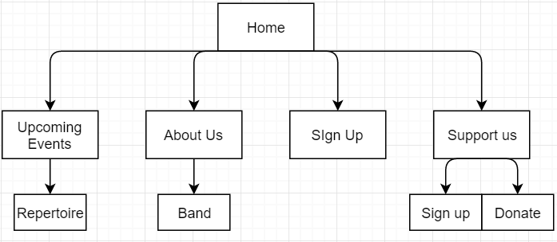

- Mission Statement:
- The purpose of this website will be to improve the amount of people who attend the orchestra's performances.
- Success Evaluation:
- The site's success will be evaluated by the amount of people who register on the website
- Target Audience:
- 1. The website will be aimed at people over the age of 50
- 2. The website will cater for this group by using black and white nostalgic image styles, large fonts, explicit instructions, simple information architecture
- Content:
- Home Page
- Upcoming Events
- -----Repertoire
- About Us
- -----Band
- Sign up
- Support Us
- -----Sign Up
- -----Donate
- Site Flowchart:
- 
- https://github.com/Lackyjegs/BRO